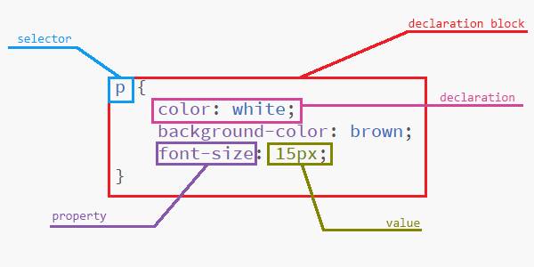
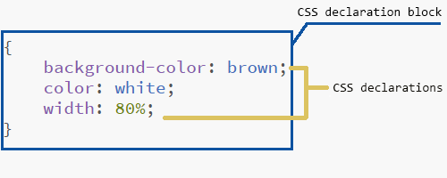
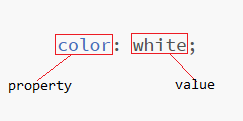

Javascript is an interpreted and high-level programming language, it is the most commonly used scripting language. It is one of the main used language for World Wide Web content development along with HTML and CSS. Javascript makes webpages interactive. Javascript is developed by Ecma International (an industry association dedicated to the standardization of information and communication systems).
CSS Levels
CSS Level 1 (CSS 1)
The first CSS that is published on December 1996, and became an official W3C Recommendation. The features of CSS Level 1 are font properties, changing colors of elements like font color and background color, text attributes, alignment of contents (text, images, tables and others), the concept of border, margin, padding and positioning and unique identification and generic classification of groups of attributes.
CSS Level 2 (CSS 2)
Published on May 1998 by W3C as a Recommendation. Added functions mostly for positioning layout like position relative, absolute, and fixed, also added z-index which is use to position element above or under other elements. It also added media types which can be use to display web pages in different platform, aural style sheets which allows audio or sound presentation, bidirectional text, and new font properties.
There is also a CSS Level 2 Revision 1 (CSS 2.1), which is released to fix bugs and improve compatibility of in CSS 2 which is released on June 2011
CSS Level 3 (CSS 3)
In CSS 3, there are many features that is introduced, included are new selectors (:target, nth-child(n), etc.), new properties (flexbox, grid, border-radius, etc), multiple background image, rounded border using border-radius, new text module, and new color module like the rgba which includes the transparency of the color.
Origin of HTML Stylesheets
Author Style
It is a style sheets specified by the developer of the website. Which can be categorized into:
- Inline - placed in a specific element by using style attribute.
<p style="color: white; background-color: rgba(0, 0, 0, 0.7);"> </p>
- Embedded or Internal - placed in the head of html using the style element.
<style> </style>
- External - placed in the head of html using the link element.
<link rel="stylesheet" href="">
Note: The categories of author style above is aranged (Highest to Lowest priority) when the author specified more than one style for specific element, the one that will apply is the inline since it has higher priority.
User Style
A style sheets specified by the user for the website, it is usually done by having some plugins in the browser, although some browsers support it. It is helpful for person with eye problems.
User-Agent Style
Also known as default style sheets, it is provided by the browser that is being used to access the website. Different browsers have different style sheets to present the website. It is used when there is no other style sheets are specified for specific element of HTML.
!important Declaration
A property can be declared !important meaning it is higher priority than the other property, it will not be overridden by property declared normal even if it is declared after the !important declaration. In some cases there might be two !important declaration for the same property, then we can look into the order of the origin to see which will be applied.
Precedence of Origin (Cascading)
When there are collision between properties, meaning the property is being declared multiply times in different style sheets, there is a order in which style sheet will be applied for the property (Highest to Lowest priority):
- Transition declarations
- User agent important declarations
- User important declarations
- Override important declarations
- Author important declarations
- Animation declarations
- Override normal declarations
- Author normal declarations
- User normal declarations
- User agent normal declarations
Note: When a property is declared in the same origin then the latest declaration will be one one that will apply.
CSS Statements
CSS statement are statements that is being rendered by the browser to provide styles or lay-out for elements of HTML or the HTML itself. This statements can be categorized into two:
- Ruleset is a combination of selectors and declaration block, considered as main building block of CSS.
- At-Rules begins with @ followed by an identifier, it tells the CSS what to do and how it should be done. Each of the identifier has its own way of creating a statement.
CSS Ruleset
Compose of selector which represents the element of the HTML to apply the style, declaration block which is compose of declarations.

CSS Declaration Block
Compose of CSS declarations enclosed by curly braces ({ }) which is applied for specific elements of HTML. For inline CSS using style attribute, curly braces are removed because it can only be applied for the element with the style attribute.

CSS Declaration
CSS declaration is the combination of properties and its value in order to apply the style to elements of HTML. It is composed of property, colon(:) that serves as separator, value, and semi-colon(;) which tells that the declaration ended or in order to separate from other declarations.

- The property refers to the feature that will be applied for the design or style, like color, background, border, and many more.
- The value is used to specify how the property will act when rendered by the browser, like for property color it can have values white, red, or black.
CSS At-rules
Regular At-rules
Regular At-rules follows regular syntax @KEYWORD followed by the rule to specifiy.
- @charset - used to specify the character set to be used when rendering the website.
- @import - used to include another external CSS in a CSS, must be inserted at topmost part of the stylesheet.
- @namespace - allows the use of other namespaces from XML or SVG.
Nested At-rules
Nested At-rules contains CSS statements inside its block, this statements will only apply if certain condition has been met by the user or the browser. The CSS statments are contained in curly braces ({ }) which follows after the @KEYWORD.
- @media - allows to apply styles to a specific media query (eg. screen sizes)
- @supports - can be used to check if browser supports a specific feature before applying the styles.
- @document - allows to apply styles to a specific page, this styles will be ignored by the other pages of the website.
- @page - use to layout the printing of the page.
- @font-face - use to add new font that can be used in styling the website.
- @keyframes - use to specify keyframes for an animation which can be applied to a selector.
- @viewport - currently at the Working Draft stage
- @counter-style - at the Candidate Recommendation stage, but only implemented in Gecko as of writing
- @font-feature-values - at the Candidate Recommendation stage, but only implemented in Gecko as of writing